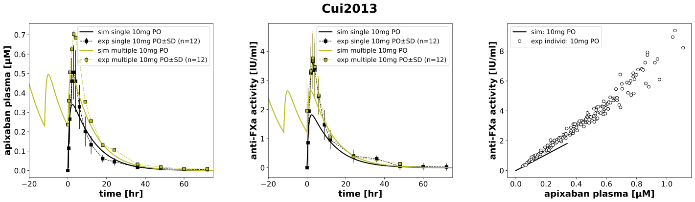
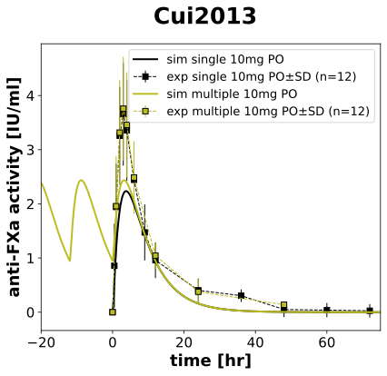
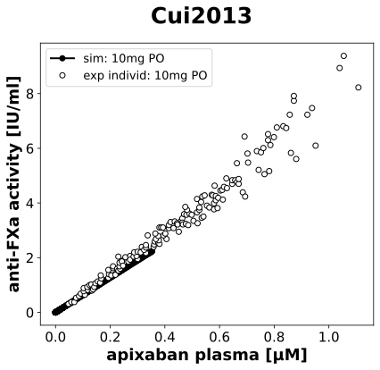

|
 |
|
 |
|
 |
../../../../experiments/studies/cui2013.py
from typing import Dict
from sbmlsim.data import DataSet, load_pkdb_dataframe
from sbmlsim.fit import FitMapping, FitData
from sbmlutils.console import console
from pkdb_models.models.apixaban.experiments.base_experiment import (
ApixabanSimulationExperiment,
)
from pkdb_models.models.apixaban.experiments.metadata import Tissue, Route, Dosing, ApplicationForm, Health, \
Fasting, ApixabanMappingMetaData
from sbmlsim.plot import Axis, Figure
from sbmlsim.simulation import Timecourse, TimecourseSim
from pkdb_models.models.apixaban.helpers import run_experiments
import pandas as pd
class Cui2013(ApixabanSimulationExperiment):
"""Simulation experiment of Cui2013"""
dose = 10.0
bodyweight = 63.1
colors = {
"API10": "black", # single dose
"API10M": "tab:blue", # multiple doses
}
interventions = list(colors.keys())
infos_pk = {
"[Cve_api]": "apixaban",
}
infos_pd = {
"antiXa_activity": "antiXa_activity",
}
info_figpd_scatter = {
"antiXa_vs_apixaban": "antiXa_activity",
}
legends = {
"API10": "single 10mg PO", # single dose
"API10M": "multiple 10mg PO", # multiple doses
}
def datasets(self) -> Dict[str, DataSet]:
dsets: Dict[str, DataSet] = {}
# timecourse data
for fig_id in ["Fig1", "Fig2"]:
df = load_pkdb_dataframe(f"{self.sid}_{fig_id}", data_path=self.data_path)
for label, df_label in df.groupby("label"):
dset = DataSet.from_df(df_label, self.ureg)
if "apixaban" in str(label).lower():
dset.unit_conversion("mean", 1 / self.Mr.api)
dsets[str(label)] = dset
# scatter fig3
df = load_pkdb_dataframe(f"{self.sid}_Fig3", data_path=self.data_path)
for ylab, df_label in df.groupby("y_label"):
dset = DataSet.from_df(df_label, self.ureg)
dset.unit_conversion("x", 1 / self.Mr.api)
dsets[str(ylab)] = dset
return dsets
def simulations(self) -> Dict[str, TimecourseSim]:
Q_ = self.Q_
tcsims: Dict[str, TimecourseSim] = {}
# single dose
tc_single = Timecourse(
start=0,
end=96 * 60,
steps=1000,
changes={
**self.default_changes(),
"BW": Q_(self.bodyweight, "kg"),
"PODOSE_api": Q_(self.dose, "mg"),
},
)
tcsims["API10"] = TimecourseSim(
timecourses=[tc_single],
time_offset=0,
)
# multiple doses
tc0 = Timecourse(
start=0,
end=12 * 60,
steps=600,
changes={
**self.default_changes(),
"BW": Q_(self.bodyweight, "kg"),
"PODOSE_api": Q_(self.dose, "mg"),
},
)
tc1 = Timecourse(
start=0,
end=12 * 60,
steps=600,
changes={
"PODOSE_api": Q_(self.dose, "mg"),
},
)
tc2 = Timecourse(
start=0,
end=96 * 60,
steps=1000,
changes={
"PODOSE_api": Q_(self.dose, "mg"),
},
)
tcsims["API10M"] = TimecourseSim(
timecourses=[tc0] + [tc1] * 9 + [tc2],
time_offset=-120 * 60,
)
return tcsims
def fit_mappings(self) -> Dict[str, FitMapping]:
mappings: Dict[str, FitMapping] = {}
infos = {
**self.infos_pk,
**self.infos_pd,
}
for intervention in self.interventions:
for sid, name in infos.items():
mappings[f"fm_{name}_{intervention}"] = FitMapping(
self,
reference=FitData(
self,
dataset=f"{name}_{intervention}",
xid="time",
yid="mean",
yid_sd="mean_sd",
count="count",
),
observable=FitData(
self,
task=f"task_{intervention}",
xid="time",
yid=sid,
),
metadata=ApixabanMappingMetaData(
tissue=Tissue.PLASMA,
route=Route.PO,
application_form=ApplicationForm.TABLET,
dosing=Dosing.SINGLE if intervention == "API10" else Dosing.MULTIPLE,
health=Health.HEALTHY,
fasting=Fasting.NR,
),
)
return mappings
def figures(self) -> Dict[str, Figure]:
return {
**self.figure_pk(),
**self.figure_pd(),
**self.figure_scatter(),
}
def figure_pk(self) -> Dict[str, Figure]:
fig = Figure(
experiment=self,
sid="Fig1",
name=f"{self.__class__.__name__}",
height=self.panel_height,
width=self.panel_width * 0.87,
)
plots = fig.create_plots(
xaxis=Axis(self.label_time, unit=self.unit_time, min=-20, max=75),
legend=True,
)
for kp, sid in enumerate(self.infos_pk):
plots[kp].set_yaxis(self.labels[sid], unit=self.units[sid])
for intervention in self.interventions:
plots[0].add_data(
task=f"task_{intervention}",
xid="time",
yid="[Cve_api]",
label=f"sim {self.legends[intervention]}",
color=self.admin_colors["single"] if intervention == "API10" else self.admin_colors["multiple"],
)
plots[0].add_data(
dataset=f"apixaban_{intervention}",
xid="time",
yid="mean",
yid_sd="mean_sd",
count="count",
label=f"exp {self.legends[intervention]}",
color=self.admin_colors["single"] if intervention == "API10" else self.admin_colors["multiple"],
)
return {fig.sid: fig}
def figure_pd(self) -> Dict[str, Figure]:
fig = Figure(
experiment=self,
sid="Fig2",
name=f"{self.__class__.__name__}",
height=self.panel_height,
width=self.panel_width * 0.87,
)
plots = fig.create_plots(
xaxis=Axis(self.label_time, unit=self.unit_time, min=-20, max=75),
legend=True,
)
for kp, sid in enumerate(self.infos_pd):
plots[kp].set_yaxis(self.labels[sid], unit=self.units[sid])
for intervention in self.interventions:
for kp, sid in enumerate(self.infos_pd):
name = self.infos_pd[sid]
plots[0].add_data(
task=f"task_{intervention}",
xid="time",
yid=sid,
label=f"sim {self.legends[intervention]}",
color=self.admin_colors["single"] if intervention == "API10" else self.admin_colors["multiple"],
)
plots[0].add_data(
dataset=f"{name}_{intervention}",
xid="time",
yid="mean",
yid_sd="mean_sd",
count="count",
label=f"exp {self.legends[intervention]}",
color=self.admin_colors["single"] if intervention == "API10" else self.admin_colors["multiple"],
)
return {fig.sid: fig}
def figure_scatter(self) -> Dict[str, Figure]:
fig = Figure(
experiment=self,
sid="Fig3",
name=f"{self.__class__.__name__}",
height=self.panel_height,
width=self.panel_width * 0.87,
)
plots = fig.create_plots(
xaxis=Axis(self.labels["[Cve_api]"], unit=self.units["[Cve_api]"]),
legend=True,
)
plots[0].set_yaxis(self.labels["antiXa_activity"], unit=self.units["antiXa_activity"], scale="linear")
plots[0].add_data(
task="task_API10",
xid="[Cve_api]",
yid="antiXa_activity",
label="sim: 10mg PO",
color="black",
linestyle="solid",
marker="o",
)
plots[0].add_data(
dataset="antiXa_vs_apixaban",
xid="x",
yid="y",
label="exp individ: 10mg PO",
color="white",
markeredgecolor="black",
marker="o",
linestyle="",
)
return {fig.sid: fig}
if __name__ == "__main__":
run_experiments(Cui2013, output_dir=Cui2013.__name__)
{kind=link}
{kind=link}
{kind=link}